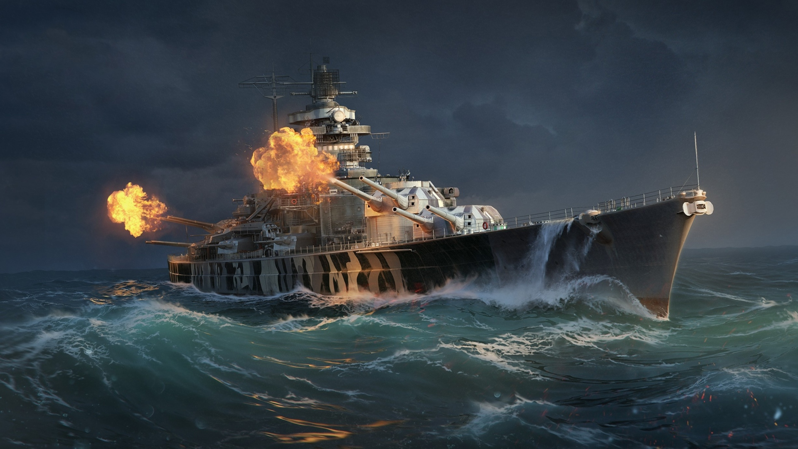

Project Idea
Overview
The idea of this project is to create an online database containing records and specifications of all naval warships that were in service in WW2, along with the battles they participated in and the crew that served them. This project aims to gather as much knowledge as possible about these warships of the past and present it all in one place. Essentially, it’ll be a wiki for WW2 era warships.
Motivation
For quite some time now, I’ve had a deep seeded passion for warships of the 20th century. As a result, I’ve spent a considerable amount of time browsing sites such as Wikipedia to learn more about these steel leviathans and their past. It would have been wonderful to have a site that acted as a repository for all knowledge of naval vessels of WW2. Unfortunately, it is a rather niche subject and most of the people who are enthusiasts of it are often not the kind of people with technical expertise, leaving most online knowledge of the subject originating from government archives and the like.
Description
Features:
- Warship, crew and battle profiles: Each warship will get their own profile page, listing their specifications, armament, history, involvement in the war, relevant pictures and a link to a profile of the officer in command of the vessel. Also present will be pages dedicated to every major naval engagement during WW2. On these pages, a description of the battle, its outcome and any available logs and media will be present. These will serve as the backbone of the site, and the bulk of the information provided.
- Interactive timeline: A page on the site will be dedicated to an interactive timeline, spanning from the beginning to the end of WW2. On it, will be nodes featuring various different notable events regarding naval warfare during the war. Such events may include historical engagements (for example, the Battle of Midway), the creation and sinking of noteworthy warships (such as the Bismarck) and other various noteworthy events, such as the Atlantic convoys. These nodes will then provide links to relevant pages. This timeline will likely be coded in a language like javascript, or even flash.
- User contributions: The site will also allow users to submit any photographs or recounts they might have that are relevant. Since there are still many war veterans around, or at least inherited belongings, there is plenty of information that can be sourced from the public that may not be available from government archives and whatnot. However, to prevent an influx of misinformation from untrustworthy or malicious sources, all content submissions will be passed through a moderation team for verification first before being published to the site, likely under a separate section from the original site information.
- Virtual tours: Some Warships, such as the USS Missouri still exist today as museum ships. Unfortunately, most nations did not preserve their warships after the war, aside from America. This makes visiting such museums difficult for most people. However, by providing virtual tours of these ships on the site, set up much like Google’s street view, users would be able to explore the interior of certain warships from the comfort of their own home. Much like the interactive timeline, this will most likely be written in javascript.
- Shipwreck map: During WW2, many warships were lost at sea. Many of which have never been found. But some have, and they can be shown on an interactive map, with nodes pointing to their locations. These notes would provide links to the ship in question and any events the shipwreck may be related to (such as the Yamato and her fate in operation Ten-Go).
- Search: Like any database site, a good search feature needs to be implemented. This will take the form of a conventional search bar, with the option for more advanced filters should the user choose to use them.
- Discussion forum: This will allow users to discuss topics relevant to the database. Often, some subjects or queries will have answers that are subjective and cannot be answered by simply searching a database. A discussion forum will enable users to utilise the facts present to make their own judgements on such matters. The moderation team handling the user submissions will also be in charge of moderating the forum to prevent malicious users from disrupting discussions or harassing users.
Tools and Technologies
In order to host the site, servers will be required. Since purchasing and maintaining such devices is often very costly, they will likely be rented from a third part company. To create the interactive ship tours, cameras will be needed. Camera rings and stitching like what the IMC (Immersive Media Company) use will be necessary to make this a reality. As for software, a program to create webpages, such as Adobe Dreamweaver, Quanta Plus, Expression Web, ect. will be necessary. Database management software such as Oracle SQL developer are necessary for the creation of the database itself. Finally, graphical design software such as Adobe Illustrator or Logomaker will be needed for the graphical assets of the site.
Skills Required
Proficiency in HTML, CSS, javascript and graphic design are paramount for the creation of the website, and its interactive elements. As for the database, expertise in SQL is a must. The forum and user content submissions also require moderation, so online moderation skills are also necessary. The interactive tours will likely require professional photography work and equipment.
Most assets required for this project are relatively feasible. Finding web servers to host the database and site is doable. People proficient in HTML, CSS, javascript, graphic design and SQL are plentiful, so finding the skill needed for that aspect is also well within possibility. However, finding professional help in regards to the photography needed for the virtual tours may prove to be a challenge, as not only will it be costly, but organising crew to travel to various different museum ships around the world is a particularly expensive undertaking.
Outcome
Should the project turn out a success, the internet will have an extremely useful resource to naval warfare during World War 2, presented in a manner that is easy to access and versatile. This will help fill in a niche previously neglected and hopefully encourage continued interest in naval history of World War 2. Not only from older generations, but hopefully younger ones too, as history’s continuity relies on younger generations to carry it forward. The implementation of user submitted content will also hopefully bring more artefacts and stories to light that were previously unshared.